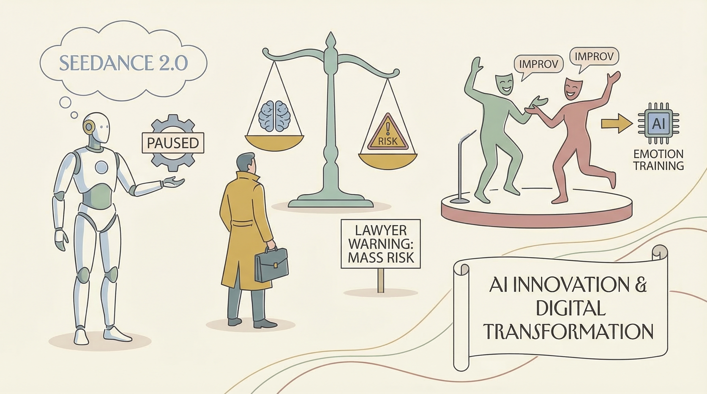

字节跳动暂停Seedance 2.0视频生成器全球发布，以避免法律问题。
两克伴AIGC日报
2026-03-16 星期一

本期关注：字节跳动暂停Seedance 2.0全球发布规避法律风险，AI律师警告心理疾病案例或致大规模伤亡，Qwen 3 8B以1/4参数规模胜出6项硬评估，未审查版Qwen3.5-9B发布，创新项目实现ChatGPT账户免费调用OpenAI API。
📰 行业动态
AI律师警告AI心理疾病案例可能引发大规模伤亡。
AI公司寻求即兴演员技能以训练AI理解人类情感。
🔥 今日焦点
近日，Reddit用户u/Silver_Raspberry_811进行了一项针对10个小型语言模型的盲评测试，测试内容涉及13个前沿技术难题，包括分布式锁调试、Go并发错误、SQL优化、贝叶斯医学诊断等。测试结果显示，8B参数的Qwen 3模型在13项测试中赢得了6项，平均得分9.40，位居第一。这一结果令人惊讶，因为Qwen 3的参数仅为其他模型的1/4。此次测试的重要性在于，它展示了小型语言模型在解决复杂问题上的潜力，对AI领域的发展具有重要意义。此次测试结果将推动AI领域对小型语言模型的研究和应用，为未来AI技术的发展提供新的思路。
---
近日，Reddit用户u/EvilEnginer发布了一款名为Qwen3.5-9B-Claude-4.6-Opus-Uncensored-Distilled-GGUF的全新未审查大型语言模型。该模型通过修改gguf文件中的聊天模板，默认禁用了思考功能，旨在为社区提供更自由的创作空间。
这款模型的重要性在于，它结合了多个优秀模型的优点，旨在提升创作效率和创意表现。作者首先从HauhauCS和Jackrong的模型中汲取灵感，分别下载了最受欢迎和第二受欢迎的版本，并进行了比较和整合。这种跨模型的融合，不仅丰富了模型的功能，也为其在角色扮演写作、图像生成和标签制作等领域的应用提供了更多可能性。
近日，一位名为EvanZhouDev的开发者在GitHub上发布了一项创新项目，名为“Free OpenAI API Access with ChatGPT Account”。该项目旨在为ChatGPT用户提供免费的OpenAI API访问权限，让更多开发者能够轻松接入OpenAI的强大AI能力。
这一举措对于AI领域具有重要意义。首先，它降低了AI技术的门槛，让更多开发者能够利用OpenAI的API进行创新实践。其次，通过ChatGPT这一热门平台，该项目有望吸引更多用户关注和参与AI技术的研究与应用。此外，这一项目还有助于推动AI技术的普及，加速AI产业的快速发展。
在Reddit上，用户u/mircM52提出了关于GLM 4.7模型在双RTX Pro 6000 Blackwell显卡上运行的问题。他询问是否有人成功将完整的358B版本模型完全适配到192GB VRAM中，并询问了最高量化级别（是否NVFP4适用）以及批处理大小为1、输入序列小于4096个token的情况。尽管在线理论计算器显示模型几乎无法完全适配，但他认为这些计算可能过于保守，因此希望了解实际操作中是否有人成功运行。如果模型无法适配，他还询问了针对该配置的其他模型推荐。该用户的主要使用场景是角色扮演（非成人内容）和一般性辅助（基本工具调用和RAG）。这一讨论对于AI领域具有重要意义，因为它涉及到了大语言模型在实际硬件配置下的运行效率和适配问题，对AI从业者和研究者了解模型与硬件的匹配度提供了实践参考。
📚 深度长文
本文探讨了“agentic engineering”这一概念，即利用编码代理来辅助软件开发的过程。文章详细介绍了这一实践的方法、模式和挑战，对于理解AI Agent在软件开发中的应用具有重要意义。文章核心观点包括：通过代理实现软件开发的自动化和智能化，提高开发效率和质量；关键论据包括：代理可以处理重复性任务，减少人为错误，提高开发速度；阅读价值在于，它为开发者提供了新的视角和工具，有助于提升软件开发水平。
---
《The Claude Setup I Use To Be Ahead of 99% of Users》一文，由The PyCoach撰写，深入探讨了如何通过简单的设置，在AI领域迅速脱颖而出。文章的核心观点是，通过短短几分钟的设置，用户即可获得显著的效果，从而在众多用户中脱颖而出。
文章中，作者详细介绍了其独特的Claude设置方法，并提供了关键论据来支持其观点。首先，作者强调了深度和独特见解的重要性，认为这是在AI领域取得成功的关键。其次，文章通过实际案例和数据分析，展示了Claude设置的有效性，证明了其能够帮助用户在短时间内获得显著成果。
本文由资深谈判专家Jacob Warwick撰写，深入探讨了如何在不显得贪婪的情况下，通过谈判技巧获得20%-40%的薪酬提升。文章指出，谈判并非始于正式报价，而是应从面试阶段就开始。作者详细阐述了能够解锁高额薪酬的精准措辞，并分享了如何将面试转变为深入探讨的发现通话。此外，文章还揭示了为何产品经理在谈判方面表现不如他人，并提供了相应的改进策略。本文对于AI从业者而言，不仅具有极高的阅读价值，更提供了独特的深度见解，有助于提升谈判技巧和职业竞争力。
🛠️ 产品推荐
Scitex-notification是一款专为AI代理设计的多后端通知系统。该产品通过TTS（文本转语音）技术，让AI代理在本地和远程服务器上工作时，能够将进度信息语音播报至用户桌面。若用户未及时响应，系统将自动升级至电话呼叫（需Twilio设置）。其通知链路包括：TTS音频→桌面→邮件→短信→电话。在连续7次未响应音频警报后，AI代理将自动拨打电话。Scitex-notification支持iPhone Sile模式，有效提升工作效率，解决用户长时间等待AI代理响应的问题。
---
PostSupremo是一款基于AI的LinkedIn内容生成工具，旨在帮助用户快速生成符合LinkedIn独特语调的内容。该工具能够自动生成励志的非连续语句、谦虚的吹嘘、失败的经验教训以及常见的“没想到会写这篇文章”等语句。对于需要发布LinkedIn内容但不想过多思考的用户，PostSupremo能够提供实际帮助，节省时间和精力。
---
Show HN: Kubernetes Security Profile Generator Using eBPF是一款基于eBPF技术的Kubernetes安全配置生成工具。该产品旨在解决用户在部署工作负载时，难以准确识别所需网络流量和安全配置的问题。通过自动分析容器使用情况，kguardian能够智能生成相应的NetworkPolicy和seccomp profiles，有效避免因配置错误导致的部署中断。该工具显著提升了Kubernetes环境下的安全性，降低了运维成本，适用于对安全性有高要求的云原生应用场景。